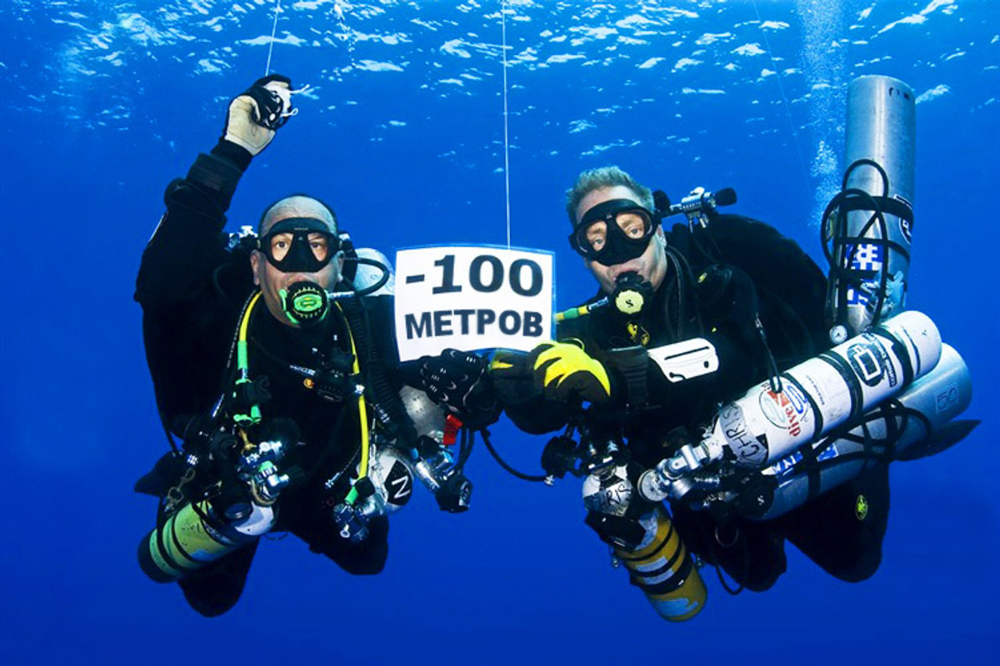

Спецкурсы PADI
на Ко Самуи
Углубите свои навыки — ночной дайвинг, глубина, рэки, найтрокс, подводная фотография
Обучение и карьера в PADI


Возможности безграничны — любые курсы и специализации PADI на Самуи
🏆 Master Scuba Diver
5 специализаций + Rescue Diver = звание Master Scuba Diver — высшее любительское звание в PADI, «чёрный пояс в дайвинге»!
Зачем нужны спецкурсы?
Спецкурсы PADI позволяют вам развивать конкретные навыки и открывать новые грани дайвинга. Каждый спецкурс — это 2–4 погружения, сфокусированных на одной теме. Вы получаете сертификат PADI Specialty Diver, а после прохождения 5 любых спецкурсов и наличия 50 погружений можете претендовать на престижный рейтинг PADI Master Scuba Diver — высший нон-профессиональный уровень.
Доступные спецкурсы
Deep Diver
Погружения глубже 18м, до максимальных 40м рекреационного дайвинга. Планирование, техника и потенциальные опасности глубоких погружений: управление газовым наркозом, контроль расхода воздуха, использование дайв-компьютера для декомпрессионных расчётов. 4 погружения от 18 до 40м с постепенным увеличением глубины. Мин. возраст 15 лет, требуется AOW. Обязательный спецкурс для серьёзных дайверов.
ЗаписатьсяNight Diver
3 ночных погружения — незабываемый опыт! Специальные фонари, техника входа/выхода в темноте, подводное ориентирование ночью, знакомство с ночными обитателями. Кораллы раскрывают полипы, выходят ночные хищники, креветки светятся в луче фонаря, осьминоги охотятся на рифе. Световая коммуникация с бадди, планирование ночных погружений. Мин. возраст 12 лет, требуется OW.
ЗаписатьсяUnderwater Navigator
Ориентирование по природным приметам и компасу, оценка расстояний, различные подводные маршруты: прямые курсы, квадратные и треугольные паттерны. Один из самых практичных спецкурсов — эти навыки незаменимы для самостоятельных погружений, ночного дайвинга и работы дайвмастером. 3 погружения с акцентом на ориентирование. Мин. возраст 10 лет, требуется OW.
ЗаписатьсяDigital Underwater Photographer
Метод PADI SEA (Снимай, Смотри, Настраивай). Подбор камер и боксов, три принципа хороших подводных снимков, редактирование фото. Работа с естественным светом и вспышками, композиция, съёмка макро (голожаберники, креветки) и широкоугольная съёмка (рифы, стаи рыб). Мы предоставляем камеры для тех, у кого нет своего оборудования. 2 погружения. Мин. возраст 10 лет, можно без сертификата.
ЗаписатьсяWreck Diver
Погружения на затонувшие объекты. Фонари, катушки, специальное снаряжение, погружения в условиях ограниченной видимости. Безопасное обследование внешней части рэков, проникновение внутрь с использованием линя, история затонувших объектов, особенности плавучести и навигации вблизи конструкций. В районе Самуи и Ко Тао есть несколько интересных рэков для обучения. 4 погружения. Мин. возраст 15 лет, требуется AOW.
ЗаписатьсяEnriched Air Nitrox
Самый популярный спецкурс PADI в мире. Увеличение бездекомпрессионного времени за счёт обогащённого воздуха (32–36% кислорода вместо 21%). Анализ смеси, планирование погружений на найтроксе. Вы сможете нырять дольше и чувствовать себя бодрее после погружений. Курс включает теорию и 2 погружения на найтроксе. Идеально сочетается с мульти-дайв днями. Мин. возраст 15 лет, требуется OW.
ЗаписатьсяDrift Diver
Техника погружений в течениях. Буи, лини, контроль плавучести, ориентирование, связь с напарником. Дрифт-дайвинг — это когда течение несёт вас вдоль рифа, и вы парите без усилий. Использование поверхностных маркеров (SMB), коммуникация с ботом и бадди. Особенно актуально для Sail Rock и Ко Тао, где течения — обычное явление. 2 погружения в течении. Мин. возраст 12 лет, требуется OW.
ЗаписатьсяFish Identification (AWARE)
Методика поиска и идентификации рыб, подсчёт и перепись подводных обитателей. Вы научитесь определять основные семейства и виды тропических рыб: рыбы-бабочки, рыбы-ангелы, рыбы-попугаи, групперы, мурены, скаты, акулы и многие другие. Теория классификации, полевые определители и 2 погружения, посвящённых наблюдению и идентификации. После курса подводный мир откроется вам с новой стороны. Мин. возраст 10 лет, требуется OW.
ЗаписатьсяPeak Performance Buoyancy
Мастерское владение плавучестью. Точный подбор грузов, обтекаемость, зависание в толще воды, грациозное движение у хрупких организмов. Один из самых полезных спецкурсов, который сделает каждое ваше погружение комфортнее и безопаснее. 2 погружения с отработкой навыков контроля плавучести. Мин. возраст 10 лет, требуется OW.
ЗаписатьсяBoat Diver
Спецкурс для всех, кто погружается с различных типов судов. Освоите укладку оборудования на борту, вход/выход из воды с лодки, использование свободного конца. Правила поведения на борту, коммуникация с капитаном и экипажем. 2 погружения с лодки. Мин. возраст 10 лет, требуется OW.
ЗаписатьсяCavern Diver
Погружения в световой зоне пещер. Ориентирование в гротах, использование линей, фонарей, резервного воздуха. Курс учит безопасным техникам погружений в каверны — зоны пещер, откуда всегда виден естественный свет. 4 учебных погружения. Мин. возраст 18 лет, требуется AOW.
ЗаписатьсяDiver Propulsion Vehicle
Подводный буксировщик (DPV) для исследования больших пространств за короткое время. Техника управления буксировщиком, навигация, безопасные приёмы использования. Идеально для исследования больших дайв-сайтов и рэков. 2 погружения. Мин. возраст 12 лет, требуется OW.
ЗаписатьсяEquipment Specialist
Как работает снаряжение для дайвинга, текущий ремонт, обслуживание и правильное хранение. Регуляторы, компенсаторы, компьютеры — вы будете понимать принципы работы каждого элемента. Не требует погружений — полностью теоретический курс. Мин. возраст 10 лет, требуется Scuba Diver.
ЗаписатьсяSearch and Recovery
Поиск и подъём затонувших объектов. Различные методы поиска (по кругу, по сетке, с использованием компаса), подъёмные буи и техника подъёма, погружения в условиях ограниченной видимости. Практические навыки, полезные как в дайвинге, так и в реальных спасательных ситуациях. 4 погружения. Мин. возраст 12 лет, требуется AOW.
ЗаписатьсяUnderwater Videographer
Оборудование для подводной видеосъёмки, экспозиция, фокус, типы кадров, развитие сюжета, видеомонтаж. Научитесь снимать профессиональные подводные видео — от выбора камеры до пост-обработки. 2 погружения, посвящённых видеосъёмке. Мин. возраст 10 лет, требуется OW.
ЗаписатьсяПуть к Master Scuba Diver
PADI Master Scuba Diver — это высший нон-профессиональный рейтинг, который имеют менее 2% всех дайверов мира. Требования: Advanced Open Water Diver + Rescue Diver + 5 любых спецкурсов PADI + минимум 50 залогированных погружений. Мы поможем вам спланировать путь к этому престижному званию — многие спецкурсы можно комбинировать и проходить в удобном темпе во время вашего отпуска на Самуи.
Записаться на спецкурс
Спецкурсы можно комбинировать друг с другом и с фан-дайвингом. Напишите нам, и мы составим оптимальную программу под ваши даты и уровень.